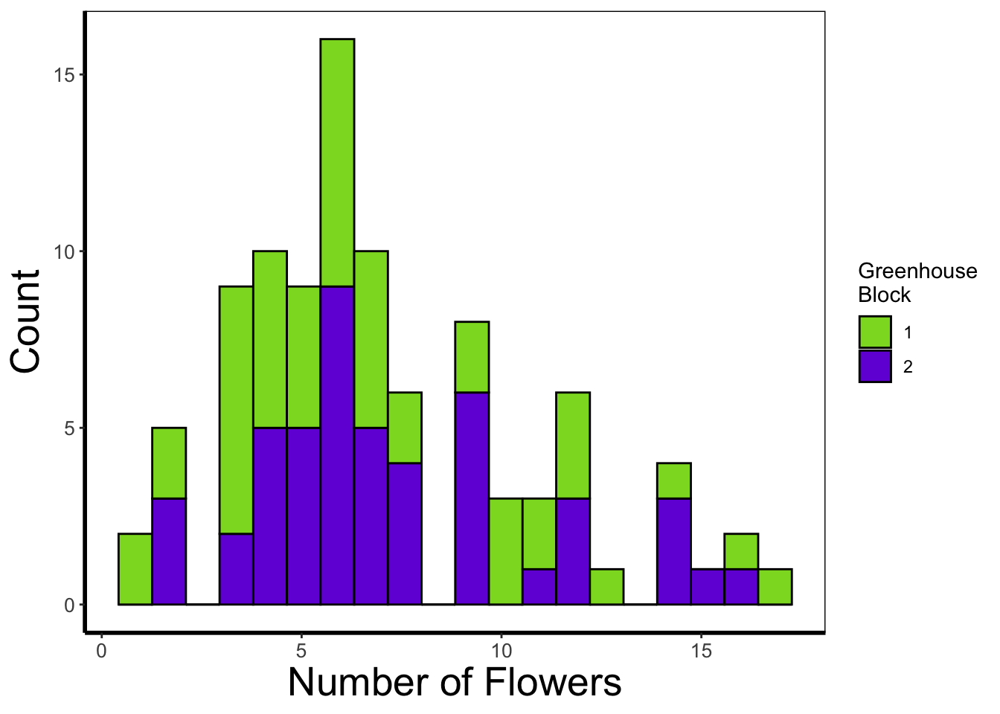
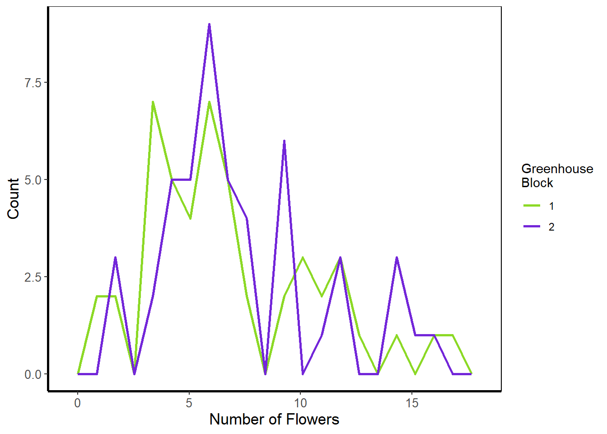
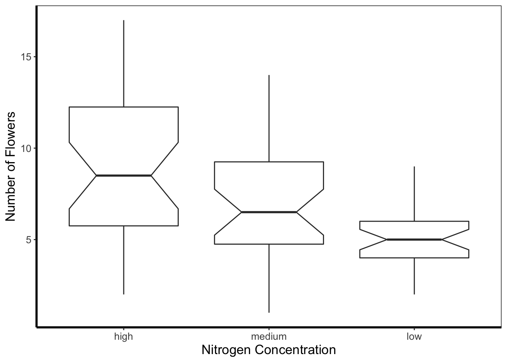
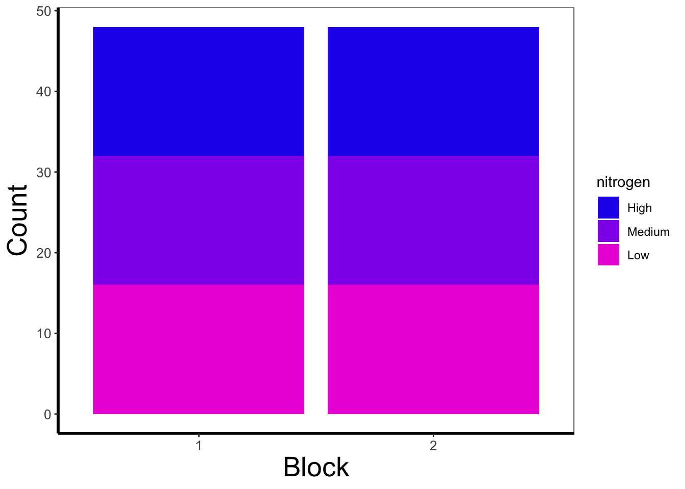
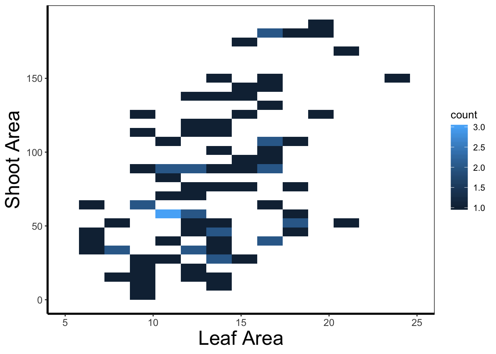
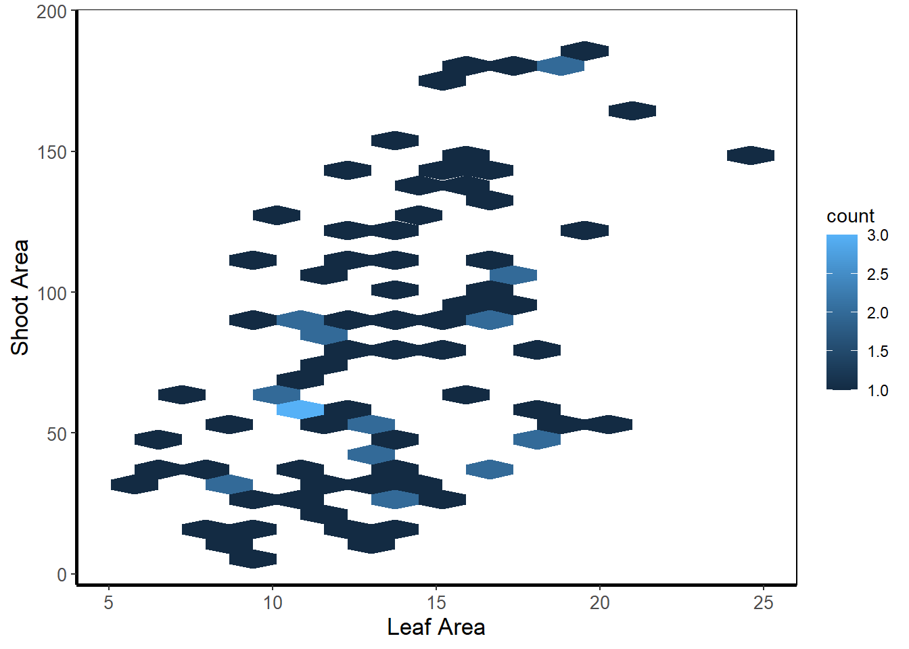
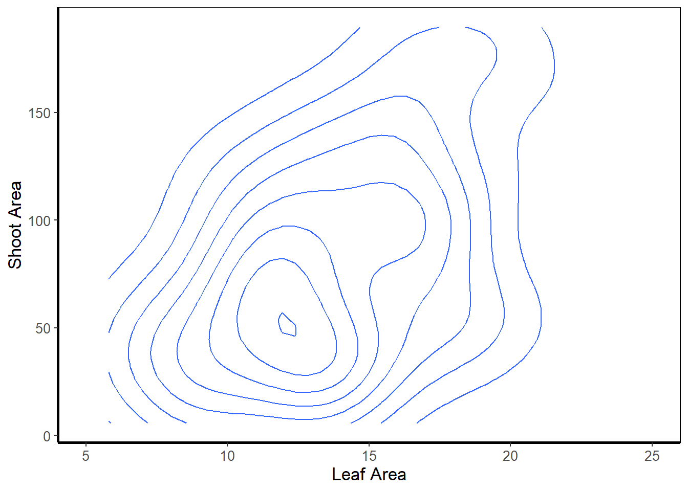
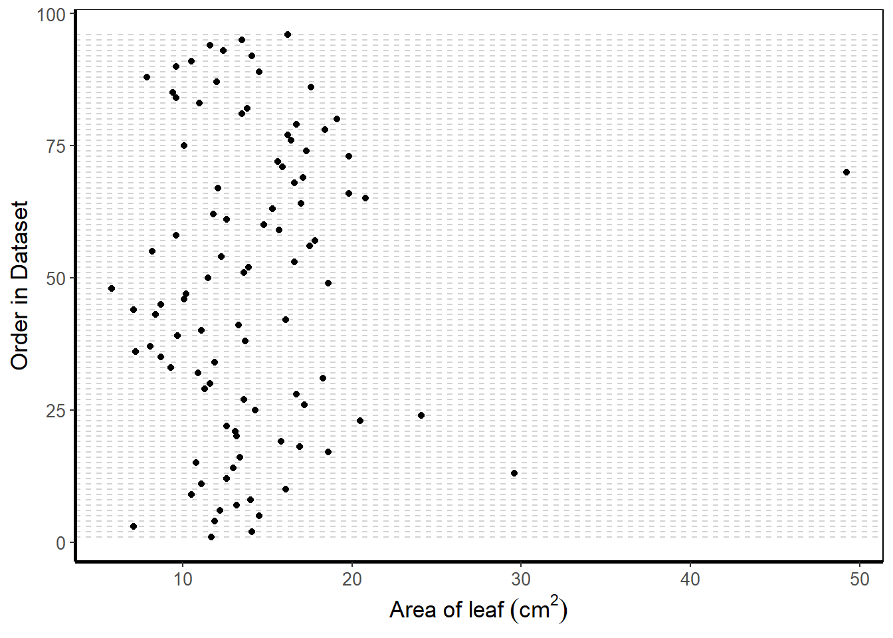

4.4 A ggplot catalogue
What follows is a quick run through of example ggplots. These will predominantly be done by changing the geoms used, but there will be additional slight tweaks which I’ll highlight.
4.4.1 Density plot
Below is a density plot which is much like a histogram. The x axis shows observations of given numbers of flowers, while the y axis is the density of observations (roughly equivalent to number of rows with that many flowers, calculated in the background by the statistics layer). Each density is coloured according to nitrogen concentration, though note that we’re using fill = instead of colour =. Try using colour instead to see what happens.
Notice that we haven’t used data = flowers here and instead just used flowers? When an object is not assigned with an argument, ggplot2 will assume that it is the dataset. We’re using that here, but I actually prefer to explicitly state what arguments are being fulfilled in my own work.
ggplot(flower) +
geom_density(aes(x = flowers, fill = nitrogen), alpha = 0.5) +
labs(y = "Density", x = "Number of Flowers", fill = "Nitrogen\nConcentration") +
scale_fill_manual(labels = c("High", "Medium", "Low"),
values = c("#DB24BC", "#BCDB24", "#24BCDB")) +
theme_rbook()
4.4.2 Histogram
Next is a histogram (a much more traditional version of a density plot). There are a couple of things to take note of here. The first is that flower$block is numeric and not a factor. We can correct that here fairly easily using the factor() function to convert it from numeric to factor (though ideally we’d have done this before - see Chapter 3). The other thing to take note of is that I’ve specified bins = 20. The number of bins control how many times the y-axis is broken up to show the data. Try increasing and decreasing to see the effect. The last is using the position = argument and stating that we do not want the bars to be stacked (the default position), instead we want them side-by-side, a.k.a. dodged.
ggplot(flower) +
geom_histogram(aes(x = flowers, fill = factor(block)), colour = "black", bins = 20, position = "dodge") +
labs(y = "Count", x = "Number of Flowers", fill = "Greenhouse\nBlock") +
scale_fill_manual(labels = c("1", "2"),
values = c("#8CD926", "#7326D9")) + # HULK SMASH!
theme_rbook()
4.4.3 Frequency polygons
A frequency polygon is yet another visualisation of the above two. The only difference here is that we are drawing a line to each value, instead of a density curve or bars.
ggplot(flower) +
geom_freqpoly(aes(x = flowers, colour = factor(block)), size = 1, bins = 20) +
labs(y = "Count", x = "Number of Flowers", colour = "Greenhouse\nBlock") +
scale_colour_manual(labels = c("1", "2"),
values = c("#8CD926", "#7326D9")) + # HULK SMASH!
theme_rbook()
4.4.4 Boxplot
Boxplots are a classic way to show to spread of data, and they’re easy to make in ggplot2. The dark line in the middle of the box shows the median, the boxes show the 25th and 75th percentiles (which is different from the base R boxplot()), and the whiskers show 1.5 times the inter-quartile range (i.e. the distance between between the first and third quartiles). We can also make the boxes notched using the argument notch = TRUE. Notches extend (1.58 times the inter-quartile range) / square root of the number of observations. If notches do no overlap, it suggest (but only suggests) there may be a significant difference between groups.
ggplot(flower) +
geom_boxplot(aes(y = flowers, x = nitrogen), notch = TRUE) +
labs(y = "Number of Flowers", x = "Nitrogen Concentration") +
theme_rbook()
4.4.5 Violin plots
Violin plots are an increasingly popular alternative to boxplots. They display much of the same information, as well as showing a version of the density plot above (imagine each violin plot, cut in half vertically and place on it’s side, thus showing the overall distribution of the data). In the plot below the figure is slightly more complex than those above and so deserves some explanation.
Within geom_violin() we’ve included draw_quantiles = where we’ve specified we want quantile lines drawn at the 25, 50 and 75 quantiles (using the c() function). In combination with geom_violin() we’ve also included geom_jitter(). geom_jitter() is similar to geom_point() but induces a slight random spread of the points, often helpful when those points would otherwise be clustered. Within geom_jitter() we’ve also set height = 0, and width = 0.1 which specifies how much to jitter the points in a given dimension (here essentially telling ggplot2 not to jitter by height, and only to jitter width by a small amount).
Finally, I’m also using this plot to show scale_y_log10. Hopefully this is largely self-explanatory (it converts the y-axis to the log10 scale). There are additional scaling options for axis (for instance scale_y_sqrt()). Please note that using a log scaled axis in this case is actually doing harm in terms of understanding the data, we’d actually be much better off not doing so in this particular case.
ggplot(flower) +
geom_violin(aes(y = flowers, x = nitrogen, fill = nitrogen), draw_quantiles = c(0.25, 0.5, 0.75)) +
geom_jitter(aes(y = flowers, x = nitrogen), colour = "black", height = 0, width = 0.1, alpha = 0.5) +
scale_fill_manual(labels = c("High", "Medium", "Low"),
values = c("#5f7f5c", "#749770", "#9eb69b")) +
labs(y = "Number of Flowers", x = "Nitrogen Concentration") +
scale_y_log10() +
theme_rbook()
4.4.6 Barchart
Below is an example of barcharts. It is included here for completeness, but be aware that they are viewed with contention (with good reason). Briefly, barcharts can hide information, or imply there is data where there is none; ultimately misleading the reader. There are almost always better alternatives to use that better demonstrate the data.
ggplot(flower) +
geom_bar(aes(x = factor(block), fill = nitrogen)) +
scale_fill_manual(labels = c("High", "Medium", "Low"),
values = c("#2613EC", "#9313EC", "#EC13D9")) +
labs(y = "Count", x = "Block") +
theme_rbook()
The barchart shows the numbers of observations in each block, with each bar split according to the number of observations in each nitrogen concentration. In this case they are equal because the dataset (and experimental design) was balanced.
4.4.7 Quantile lines
While we can draw a straight line, perhaps we would also like to include the descriptive nature of a boxplot, except using continuous data. We can use quantile lines in such cases. Note that for quantiles to be calculated ggplot2 requires the installation of the package quantreg.
library(quantreg)
ggplot(aes(x = weight, y = shootarea), data = flower) +
geom_point(size = 0.5, alpha = 0.6) +
geom_quantile(colour = "darkgrey", size = 1) +
labs(y = "Shoot Area", x = "Weight") +
theme_rbook()
4.4.8 Heatmap
When using spatial data, heatmaps can be a great tool to visualise spatial patterns. ggplot2 can easily handle such data using geom_bin2d(). Even when not using spatial data, the figure can allow us to see if our data is more (or less) clustered.
ggplot(aes(x = leafarea, y = shootarea), data = flower) +
geom_bin2d() +
labs(y = "Shoot Area", x = "Leaf Area") +
coord_cartesian(xlim = c(5,25)) +
theme_rbook()
In this example, lighter blue squares show combinations of leaf area and shoot area where we have more data, and dark blue shows the converse.
4.4.9 Hex map
A similar version to geom_density2d() is geom_hex(). The only difference between the two is that the squares are replaced with hexagons. Note that geom_hex() requires an additional package called hexbin.
library(hexbin)
ggplot(aes(x = leafarea, y = shootarea), data = flower) +
geom_hex() +
labs(y = "Shoot Area", x = "Leaf Area") +
coord_cartesian(xlim = c(5,25)) +
theme_rbook()
4.4.10 Contour map
Similar to a heatmap we can make a contour map using geom_density_2d(). The way to read this figure is much the same way as you’d read a topographical map showing mountains or peaks. The central polygon represents the space (amongst shoot and leaf area) where there are most observations. As you “step” down this mountain to the next line, we step down in the number of counts. Think of this as showing where points are most clustered, as in geom_bin2d().
ggplot(aes(x = leafarea, y = shootarea), data = flower) +
geom_density2d() +
labs(y = "Shoot Area", x = "Leaf Area") +
coord_cartesian(xlim = c(5,25)) +
theme_rbook()
We can then expand on this using the statistics layer, via stat_X. For instance, we can use the calculated “level” (representing the height of contour) to fill in our figure. To do so, we’ll swap out geom_density_2d() for stat_density_2d() which will allow us to colour in the contour map.
ggplot(aes(x = leafarea, y = shootarea), data = flower) +
stat_density_2d(aes(fill = stat(level)), geom = "polygon") +
labs(y = "Shoot Area", x = "Leaf Area") +
coord_cartesian(xlim = c(5,25)) +
theme_rbook()
In this case it doesn’t look too pretty given that we don’t have a wide spread of data (as we would hope for with spatial data) leading to partly formed polygons.
4.4.11 Cleveland dotplot
The cleveland dotplot is a figure well suited to detect outliers in the data. The y axis is simply the order in which the data appears in the dataset. The x axis is our variable of interest. Points far to the left or far to the right are indicative of outliers. ggplot2 does not have a geom specifically designed for a cleveland dotplot, though because of the grammar of graphics framework, we can build it ourselves.
We do this by first using the function rownames(). This function returns the row name of each row. In most dataframes, the row names are simply numbers. Once we have this information, we can convert this to numbers using as.numeric(). After doing this we have a vector of numbers from 1 to 96. Keep in mind that such techniques can be used for any sort of figure we want to make. We’ll use the same technique to add horiztonal lines for each row of data to replicate the traditional look of a dotchart.
ggplot(flower) +
geom_hline(aes(yintercept = as.numeric(rownames(flower))), linetype = 2, colour = "lightgrey") +
geom_point(aes(x = leafarea, y = as.numeric(rownames(flower)))) +
labs(y = "Order in Dataset", x = bquote("Area of leaf"~(cm^2))) +
theme_rbook()
4.4.12 Pairs plot
For the final figure we will need an additional package, called GGally. Within GGally is a function called ggpairs() which is equivalent to pairs() (part of base R). Both functions produce comparative plots of all variables of interest. Running diagonally down from left to right are plots showing distributions; either as stacked barcharts or as density plots, in this case coloured according to nitrogen concentration. The bottom plots show the plotted relationships, with variables on the top as the x axis, and the variables on the right plotted as the y axis. For example, the very bottom left plots shows the relationship between number of flowers on the y axis and treatment on the x axis, coloured according to nitrogen concentration. Conversely, the upper plots show either the correlation between variables, when both variables are continuous and the correlation can be calculated, boxplots when the plot is of a factor variable and a continuous variable, or as a stacked barchart when both variables are factors.
Such figures are a fantastic way to quickly show relationships in the dataset. They can of course be used to plot only part of the dataset, for instance using flowers[ , 1:5] to plot the first five columns of the dataset.
I’ve included two additional arguments in the code below. cardinality_threshold = forces GGally to plot all of the variables in our dataset (where it normally wants fewer variables) as well as progress = to avoid a progress bar appearing when we run the code.
library(GGally)
flower$block <- factor(flower$block)
ggpairs(flower, aes(colour = nitrogen), cardinality_threshold = NULL, progress = FALSE) +
theme_rbook()
Now onto the real statistics in Chapter 5.